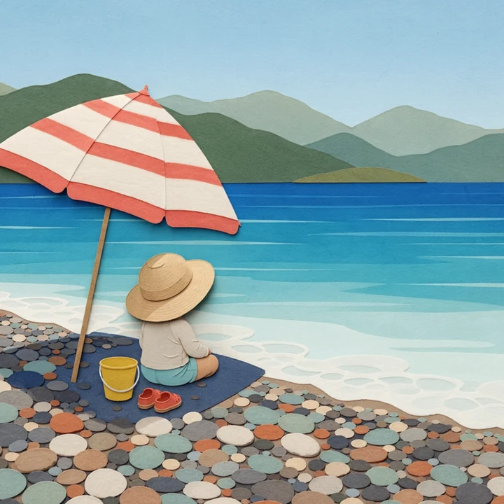

- Front seat allowed from age
- 12
- Back seat in a child seat or on a lap
- under 3
- Never left alone in a parked car
- under 6
- Check vaccines this far ahead
- 8 weeks
- Emergency number
- 112
This page is about Georgia the country, not the US state, and is part of the Georgia Travel Guide. Prices checked on 22 November 2026.
Is Georgia kid friendly and safe for families?
Yes, for most family travel: Georgia with children needs the usual care. The UK government says: "Crime levels are low." The Government of Canada's advice is to "Take normal security precautions (with regional advisories)".

The Government of Canada singles out the roads: "Fatal accidents are frequent and are one of the main causes of death in Georgia." That is why the seat rules below matter so much.
Street protests are the other thing to watch. "Political demonstrations take place frequently in Georgia, especially in central Tbilisi and around election periods," the Government of Canada notes. Steer clear of them. More in Is Georgia safe?
Our tip. On a family holiday in Georgia with small kids, plan short days on the road and avoid the hottest weeks; the seasons are in Best time to visit Georgia.
Vaccines for children before a trip to Georgia
Start early. The UK government advises: "At least 8 weeks before your trip: check the latest vaccine recommendations for Georgia". First make sure your child's routine vaccines are up to date, as the CDC advises before every trip.
The table shows what the CDC and TravelHealthPro, the UK travel health service, name by age. Babies get an early measles dose because, as TravelHealthPro warns, "Measles can have serious consequences especially in children under 1 year of age."
Our tip. Take your child's immunisation record, book the travel clinic or GP visit early, and ask how many doses and visits each course needs.
Does my child need a rabies vaccine for Georgia?
Ask a doctor well before the trip. The CDC says: "Please consult with a healthcare provider to determine whether you should receive pre-exposure vaccination before travel."
Age matters here. TravelHealthPro says: "Rabies is considered a risk and has been reported in domestic animals in this country." It adds: "Children are at increased risk".
Doses and timing are in Do tourists need a rabies vaccine before travelling to Georgia?
Children's medicines in your luggage
Check the limit on packs of medicine first, explained in Bringing medication to Georgia.
Our tip. Pack your child's usual fever and allergy medicines in their original boxes, with the leaflet.
Your child's passport: the photo rule
Check that your child still looks as in their document. The UK government says: "Some families have reported being denied entry to Georgia due to their child's passport photo", when it was "no longer matching their current appearance".
The Government of Canada notes that Georgian authorities "may hinder or deny entry to children whose physical appearance significantly differs" from the picture. It advises you to consider a new one "if your child's appearance has changed considerably".
"You can visit Georgia without a visa for up to one year," says the UK government, and the Government of Canada lists stays of up to 365 days. The UK government adds: "your passport should be valid for the duration of your stay".
Neither the UK government's nor the Government of Canada's page we checked mentions a consent letter for a child travelling with one parent; ask the consulate or your airline.
Trains are a separate case: the railway has its own ID rules for children, explained in What ID do you need for a train ticket?
Child car seats in Georgia: what the law says
Article 26 of Georgia's Law on Traffic bans children under 12 from the front seat of a car. Under-3s ride in the back seat, in a child seat that suits their height and weight, or held by a belted passenger aged at least 16.
The rules by age
Article 26 sets limits at 3, 6 and 12 years. One applies even when the car is not moving: children under six may not be left alone in a parked vehicle.
| Age | Rule | Where in the law |
|---|---|---|
| Under 3 | Back seat, in a child seat or restraint that suits the child's height and weight, or on the lap of a passenger aged 16 or over who wears a seatbelt; one child per adult | Article 26, paragraphs 7 and 8 |
| Under 6 | Never left alone in a parked vehicle | Article 26, paragraph 9 |
| Under 12 | Not in the front of a car; not on mopeds or motorcycles | Article 26, paragraph 6 |
| 12 and over | No separate rule in Article 26 | — |
![Infographic, four cards in a row, kicker "Child car seats", title "Georgia's car rules by age": 1 Under 3 — back seat in a child seat for their height and weight, or on the lap of a belted passenger aged 16+, one child per lap (Art. 26 (7–8)); 2 Under 6 — never left alone in a parked car (Art. 26 (9)); 3 Under 12 — no front seat in a car (Art. 26 (6)); 4 Planned — child seats for preschoolers: in the road safety strategy, not yet law (1tv.ge, Aug 2026). Small source line: Law of Georgia on Traffic, Article 26 (matsne.gov.ge); 1tv.ge, checked 22 Nov 2026](../assets/img/georgia-with-kids/kids-car-seat-rules-mob.webp)
We paraphrase the current Georgian consolidated text; the English translation on the same site is an older edition, and the two 2026 amendments we checked did not change Article 26.
A wider rule is planned. Georgia's First Channel reported in August 2026: "Under the planned changes, the use of child safety seats will initially become mandatory for children of preschool age." It was a plan, not yet law, when we checked on 22 November 2026.
Our tip. Even where the law doesn't require one, bring your own seat or ask the rental company in advance.
Taxis, transfers and long drives
We found no rule on child seats that applies only to taxis, so ask the service when you book; more in Taxi in Tbilisi and Georgia.
Out of town, the UK government advises: "Take care when driving, especially at night." It warns that "roads outside city centres are often badly lit and poor quality". It also advises: "do not flag taxis in the street" and "check the taxi has working seatbelts". More in Georgia roads: what to expect.
Our tip. Plan breaks every hour or two on mountain roads, and keep water and a sick bag within reach.
Sun, heat and the sea with children
Shade, a hat and sunscreen do most of the work. The NHS says: "Children aged under 6 months should be kept out of direct strong sunlight."
The NHS writes for the UK, so treat its other advice as a guide: "wear at least SPF30 sunscreen", look on the label for "at least 4-star UVA protection", and "spend time in the shade, particularly from 11am to 3pm". It also suggests "a wide-brimmed hat that shades the face, neck and ears". We found no Georgian official advice on heat and children. For hot days in the capital, see Tbilisi in summer: heat and what to do.
On the coast, read up on the beach you plan to use: Batumi beach and the sea and Can you swim at Ureki?
Our tip. Keep little ones within arm's reach in the water, and pack water shoes if the beach is pebbly.

Water and food
Both are covered on our food page: Can you drink tap water in Georgia? and Travelers' diarrhea treatment: fluids first, including what not to give children.
Our tip. Carry bottled water and oral rehydration sachets.
Dogs, cats and rabies: what to tell your children
Teach children not to touch or feed dogs and cats. TravelHealthPro explains why the young are at risk: they are "less likely to avoid contact with animals and to report a bite, scratch or lick". The Government of Canada warns: "Rabies is present in this destination and is carried by dogs and some wildlife, including bats."
After a bite or scratch, act at once. The Government of Canada tells you to "wash the wound right away with soap and clean water for about 15 minutes". The UK government says: "If you're bitten or scratched by a dog, get medical attention immediately," and "treatment is available in Tbilisi and major towns." Step by step: What to do after a dog bite or scratch in Georgia.
Our tip. Ask your child to tell you about any scratch or lick, even a small one, the same day.
If your child gets ill or hurt: 112 and doctors
Phone the emergency number. The UK government advises: "Dial 112 and ask for an ambulance." The same number reaches the police and fire and rescue crews too, and call-takers handle calls in Georgian, English, Azerbaijani, Armenian, Turkish and Russian.
Install the official app before the trip. Anyone in the country can download it. It works on Android and iOS and comes in five languages. The site says: "The main advantage of the application is the ability to determine the location of the user." The Government of Canada adds: "You can also use the 112 Georgia mobile application to contact emergency service providers in English."
How to call and what to say: How to call an ambulance in Georgia: dial 112.
Expect to pay for treatment. The UK government says: "Medical facilities in Tbilisi are available but can be expensive," and "Outside Tbilisi, medical facilities are limited." The Government of Canada warns that "immediate up-front cash payment is often required".
If your child is badly hurt or struggling to breathe, call 112 first.
For a fever or a rash that can wait, you can find paediatricians in Tbilisi in an online directory.
![Infographic, five cards in a row, kicker "Before you fly", title "Documents and health checklist": 1 Passport photo — still looks like your child; families have been refused entry over this (GOV.UK; Government of Canada); 2 Vaccines — check advice at least 8 weeks ahead; routine jabs up to date (GOV.UK; CDC); 3 Sun — SPF30+, 4-star UVA, wide-brimmed hat; babies under 6 months out of strong sun (NHS, UK advice); 4 Under-3 seat — bring or book a child seat for the back seat (Art. 26; our own advice); 5 112 Georgia app — installed before the trip; operators take calls in English (112.gov.ge). Small source line: GOV.UK, Government of Canada, CDC, NHS, matsne.gov.ge, 112.gov.ge, checked 22 Nov 2026](../assets/img/georgia-with-kids/kids-health-checklist-mob.webp)
Places children enjoy: Mtatsminda Park, Tbilisi Zoo and Batumi
For Tbilisi with kids, three places families often ask about are Mtatsminda Park, Tbilisi Zoo and, on the coast, Batumi Dolphinarium. Prices below come from their own sites, checked 22 November 2026.
Mtatsminda Park: the cable car and the rides
It is an amusement park on the hill above the city: its About page lists three zones, extreme, kids and family, and says the rides depend on weather and season. The park's site says: "The cable car will operate every day from 11:00 to 22:30," running "from Rustaveli 52 to Mtatsminda Park with 21 gondolas in 5 minutes". The pages we read list no ticket prices and no age or height limits for rides; ask at the park. For the other way up, see Mtatsminda Park and the funicular.
Tbilisi Zoo: tickets for children
Under-3s go in free. Entry costs 2 GEL from 3 to 12 and 4 GEL from 12, as listed on the zoo's site and checked 22 November 2026. The exotarium charges 1 GEL and 2 GEL for the same ages. It is at 64 M. Kostava St. The site gives no opening hours we could confirm.
Batumi with kids: the dolphinarium and the aquarium
Contact the dolphinarium before your visit: its site marks a service as temporarily suspended, and the language versions of the site place the notice on different services. The aquarium costs 5 GEL, and children under 6 years old are free, as listed on the same site and checked 22 November 2026; it is open every day except official holidays.
The site's rules page lists limits for the swim session: under-5s are not allowed; with anyone under 14, no more than two companions may come to the pool; and the youngest get life vests. More in Old Batumi: Piazza and Europe Square.
Canyons, caves and the mountains: check the age rules
Some parks set age and height limits, explained in Rain, children and other rules that close the trails. For a day out, also read Uplistsikhe cave town and, for high roads, Altitude sickness in Gudauri, Kazbegi and Tetnuldi.
Our tip. With a toddler, take a carrier as well as a stroller, and read up on each place first.
![Infographic, four cards in a row (not a map), kicker "Where to go", title "Places children enjoy, by official sites": 1 Mtatsminda Park, Tbilisi — cable car from Rustaveli 52: 21 gondolas, 5 minutes, daily 11:00–22:30 (park.ge); 2 Tbilisi Zoo — free for children under 3; exotarium on site (zoo.ge); 3 Batumi Dolphinarium — its site marks a service as temporarily suspended: check before you go (dolphinarium.ge); 4 Batumi Aquarium — free for children under 6; open daily except official holidays (dolphinarium.ge). No opening hours for the aquarium, no GEL prices. Small source line: park.ge, zoo.ge, dolphinarium.ge, checked 22 Nov 2026](../assets/img/georgia-with-kids/kids-places-map-mob.webp)
Frequently asked questions
Is Georgia kid friendly?
Is Tbilisi safe for tourists now?
Does my child need a car seat?
Which jabs does my child need for Georgia?
What documents does my child need?
What can children do in Tbilisi?
Sources
- GOV.UK foreign travel advice: health ↑
- GOV.UK foreign travel advice: entry requirements ↑
- matsne.gov.ge: Law on Traffic, Article 26 (consolidated text, publication 36) · English translation (older edition) ↑
- CDC: Travelers' health, destination page ↑
- Government of Canada: travel advice and advisories ↑
- TravelHealthPro: country information ↑
- Public Safety Command Center: frequently asked questions ↑
- Public Safety Command Center: the mobile app ↑
- GOV.UK foreign travel advice: safety and security ↑
- matsne.gov.ge: amendment No. 1401 of 17 March 2026 · amendment No. 1837 of 25 June 2026 ↑
- 1tv.ge (First Channel): child car seats to become mandatory for preschoolers, 11 August 2026 ↑
- NHS: sunscreen and sun safety ↑
- park.ge: About Mtatsminda Park ↑
- park.ge: official site ↑
- zoo.ge: Tbilisi Zoo ↑
- dolphinarium.ge: services and aquarium ↑
- dolphinarium.ge: rules (in Georgian) ↑
This guide is general information, not medical advice. Ask your child's doctor about jabs and medicines, and check the places' sites before you go.